Cómo leer este informe
Cuatro sitios premiados (uno en Awwwards y tres en los Webby) analizados con los nueve pasos de la metodología Atelier, de lo experimental a lo comercial. Cada análisis termina con una reflexión crítica y una conclusión.
Bruno Simon — Portfolio
- Selección
- Lo elegí porque convierte un portfolio, normalmente una lista de proyectos, en un videojuego: es el ejemplo más claro de «3D auténtico» de la guía (WebGL/Three.js con propósito).
- Impresión inicial
- Sorpresa y juego. Antes de leer nada ya estás conduciendo, así que el sitio te enseña por uso y no por texto.
- Estructura
- No hay menú clásico: la información (proyectos, contacto) vive en zonas del escenario 3D. Es una arquitectura espacial, no jerárquica, y cada visita es un recorrido distinto.
- Visual
- Estética low-poly con color plano y luz suave. Una paleta contenida mantiene la coherencia aunque la escena sea densa.
- Interacción
- Conducción con teclado (o controles táctiles), física de objetos y pequeños detalles escondidos que premian explorar. La interacción es el contenido.
- Usabilidad
- Pide aprender controles nuevos y, para quien solo quiere ver proyectos, el recorrido es más lento que un menú. Es el precio de la creatividad.
- Técnico
- Escena WebGL pesada: conviene medir el peso total, el LCP y los fps en un móvil de gama media. Esta es la parte donde estos sitios suelen perder frente a una web convencional.
- Criterios de excelencia
- Creatividad: sobresaliente. Diseño: muy bueno por coherencia. Usabilidad: discutible por la curva de aprendizaje. Contenido: correcto, supeditado a la experiencia.
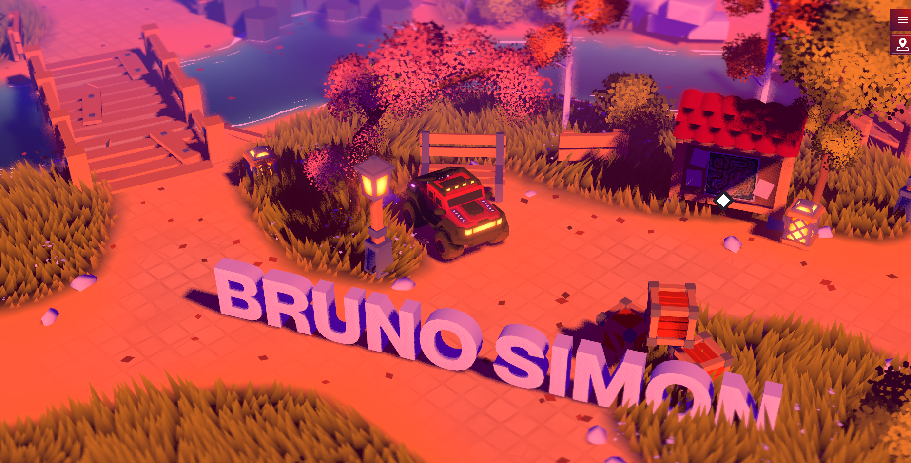
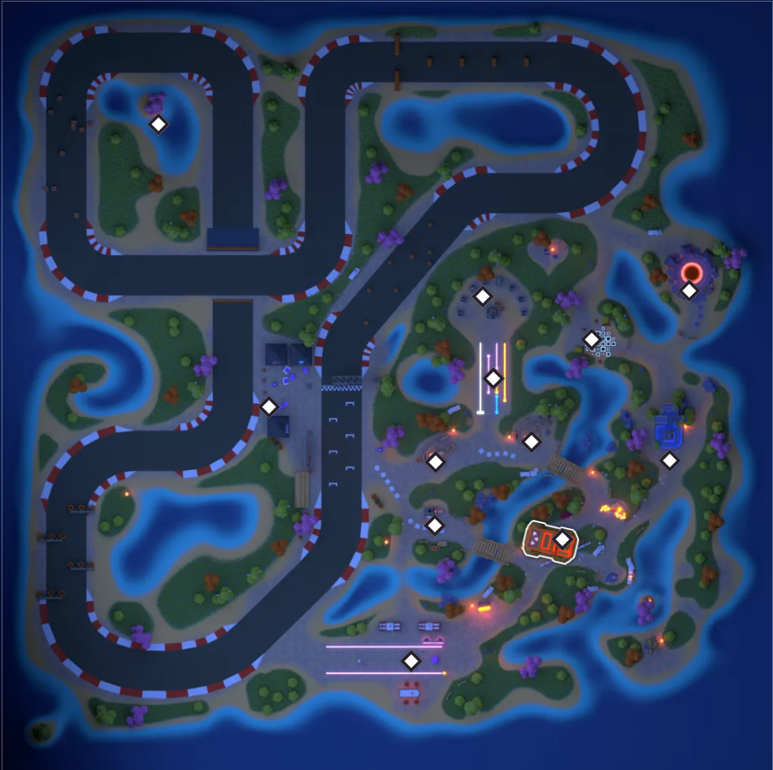
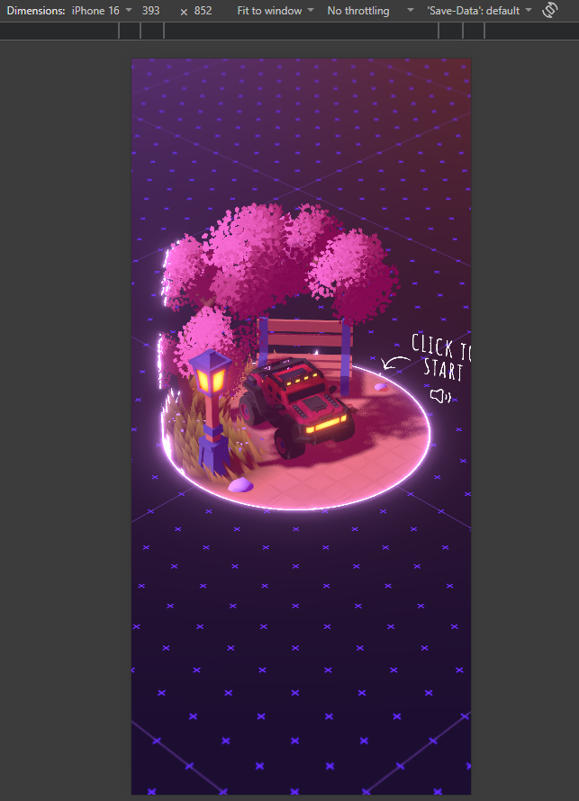
Conclusión: Una web que demuestra el producto en vez de describirlo. Aprendizaje: la innovación funciona cuando es la prueba del servicio. Mejora posible: una vía rápida (lista de proyectos) para quien busca información directa y un modo de bajo consumo.
Cowboy
- Selección
- Contrasta con el caso anterior: es un sitio comercial. La categoría premiada (Visual Design – Function) busca sitios donde el diseño visual es parte crítica de una experiencia funcional.
- Impresión inicial
- Producto primero, limpio y de marca cuidada; transmite confianza antes que espectáculo.
- Estructura
- Arquitectura de tienda: producto, configuración y compra con un camino claro. Es un sitio para convertir, no para explorar.
- Visual
- Identidad coherente con el producto: minimalismo, fotografía de producto y jerarquía tipográfica clara.
- Interacción
- Microinteracciones al servicio de elegir y comprar. Las animaciones son funcionales, no decorativas.
- Usabilidad
- Convenciones de e-commerce respetadas; el premio de interfaz móvil sugiere que el uso en pantalla pequeña estuvo cuidado.
- Técnico
- Al ser un equipo interno, se espera código mantenible. Falta medir con Lighthouse el rendimiento de las imágenes de producto.
- Criterios de excelencia
- Diseño: muy bueno. Usabilidad: sobresaliente (es el foco). Creatividad: moderada y deliberada. Contenido: claro y orientado a la venta.
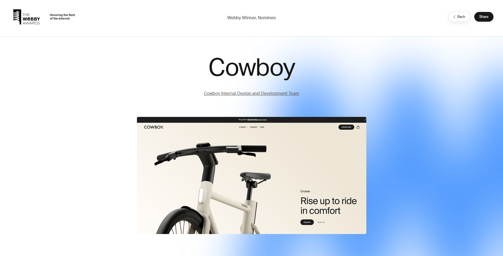
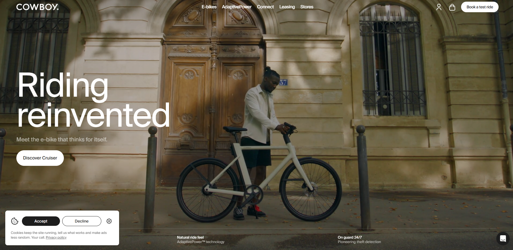
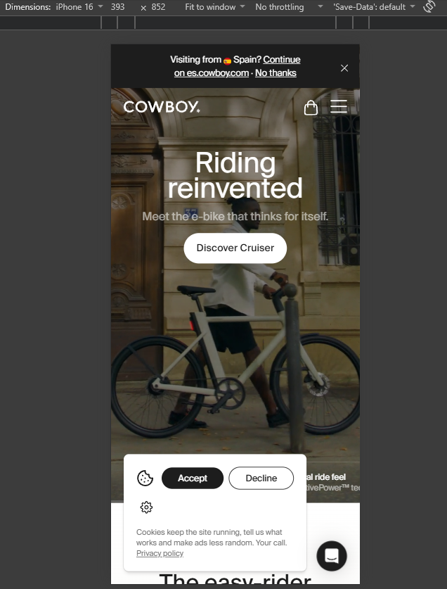
Conclusión: Prueba que un premio no exige ser experimental: la excelencia está en eliminar fricción. Mejora posible: más información de accesibilidad (contraste, alternativas de texto) visible en la propia experiencia.
Synthetic Theatre
- Selección
- Es un sitio premiado en tres categorías centradas en lo visual y el movimiento, ideal para analizar la animación como lenguaje.
- Impresión inicial
- Su ficha enmarca la pieza con la frase «Fuel Inspiration. Nothing Else Matters.»; invita a una experiencia emocional más que informativa.
- Estructura
- Pieza de experiencia, más próxima a una obra que a un sitio de información; el recorrido es guiado.
- Visual
- La categoría «Aesthetic» premia lo bello, emocional y sensorial; la dirección artística es el eje del proyecto.
- Interacción
- El movimiento es protagonista (premio de animación) y tiene versión móvil premiada específicamente por su estética.
- Usabilidad
- En piezas guiadas el riesgo es la pérdida de control del usuario (heurística de Nielsen: control y libertad). Conviene comprobar si se puede pausar o saltar.
- Técnico
- Animación continua implica coste de CPU/GPU. Medir fps y respeto de prefers-reduced-motion.
- Criterios de excelencia
- Diseño y creatividad: puntos fuertes por categoría premiada. Contenido: más atmosférico que informativo. Usabilidad: a verificar.
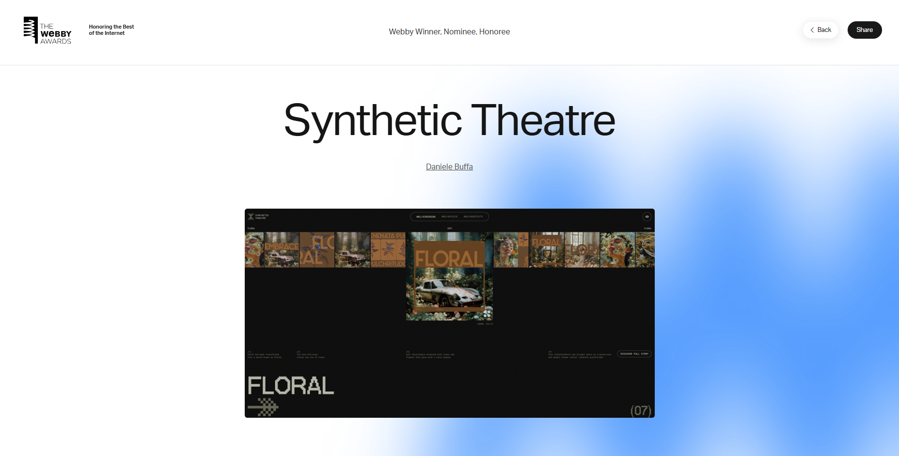
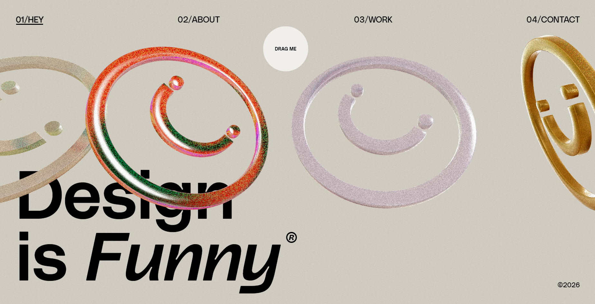
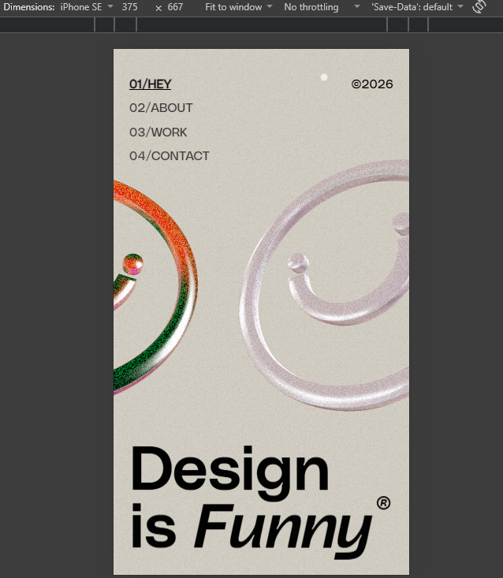
Conclusión: Muestra la animación como lenguaje narrativo. Aprendizaje: premiar la estética exige igualmente accesibilidad. Mejora posible: modo de movimiento reducido y control de reproducción.
Language Explorer
- Selección
- Es un proyecto reciente que une dos criterios: estética visual e IA responsable, un tema de debate actual.
- Impresión inicial
- El nombre promete exploración; el interés está en cómo se presenta la tecnología al público no experto.
- Estructura
- Es un experimento interactivo en torno al lenguaje, con un recorrido de exploración más que de lectura lineal.
- Visual
- La categoría «Aesthetic» premia lo bello y emocional; debe observarse cómo traduce un tema abstracto (idiomas) en imagen.
- Interacción
- La exploración es el mecanismo central de la experiencia.
- Usabilidad
- Un proyecto sobre lenguaje debería ser especialmente claro con su propio texto, traducciones y accesibilidad.
- Técnico
- Es un producto de Google: cabe esperar buen rendimiento; se verifica con Lighthouse.
- Criterios de excelencia
- Diseño: destacado por premio. Contenido: tema relevante. Creatividad: alta al traducir lenguaje en experiencia.
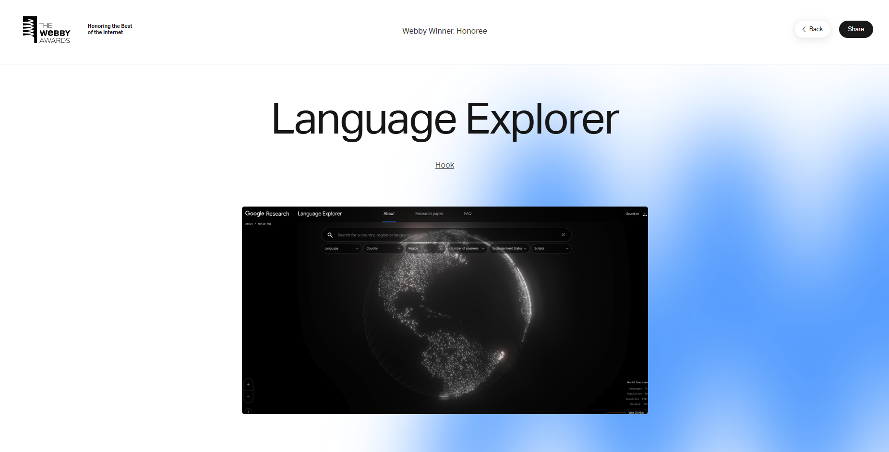
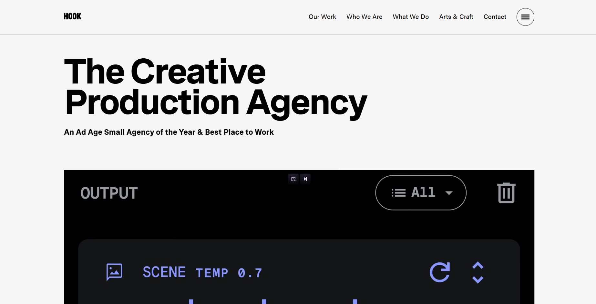
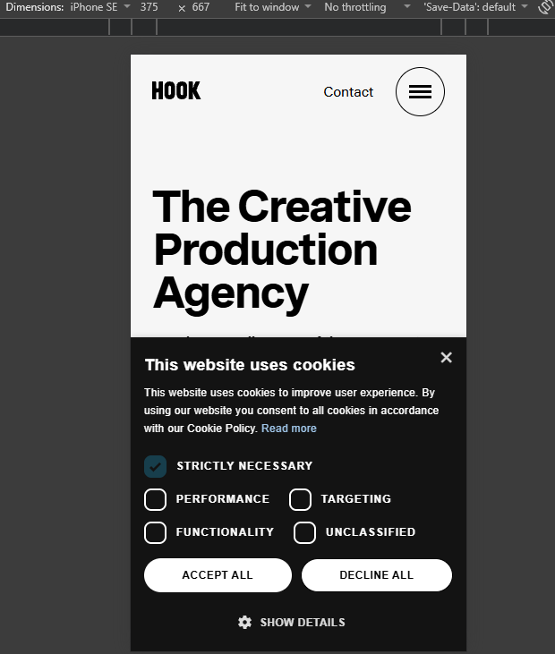
Conclusión: Un caso donde la estética y la ética tecnológica se evalúan juntas. Aprendizaje: la IA también se diseña y se comunica. Mejora posible: más transparencia sobre limitaciones.